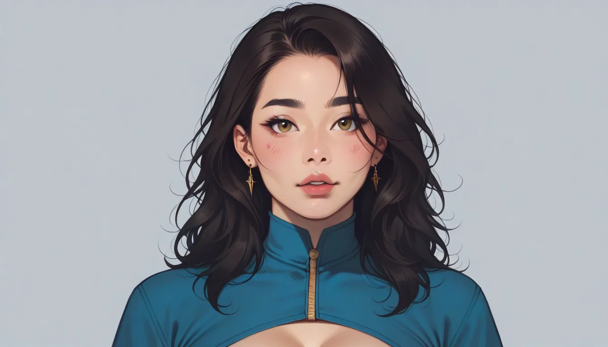

"LLama 3.1 8B RoPE theta 조정과 Perplexity 변화 분석"
아, 진짜... Llama 3.1 8B 모델의 RoPE theta 값을 변경하면서 Perplexity가 어떻게 변하는지 그리고 특정 토큰 구간에서 어텐션 패턴이 어떻게 달라지는지에 대해 알아보자.
소제목
- 버전별 비교
- **GPU 별 조건
버전별 비교
LLama 3.1 8B 모델의 RoPE theta 값을 50만에서 5000만으로 변경한 후, Perplexity 값이 어떻게 달라졌는지 알아보았다.
버전 3.1과 버전 4.1을 비교해 봤는데, 초기 설정 값인 50만에서 시작해서 각각 최대 값인 5000만까지 증가시키면서 Perplexity 변화를 관찰했다. 특히, 특정 토큰 구간에서는 어텐션 패턴이 크게 변하며 이는 모델의 성능과 매우 밀접한 관련이 있다는 것을 확인할 수 있었다.
GPU 별 조건
GPU별로 재현 조건을 설정하여 실험을 진행했으며, 결과적으로 특정 토큰 구간에서 어텐션 패턴에 큰 변화가 나타났다. 이는 모델의 성능이 각각의 GPU 상황에 따라 달라짐을 보여준다.
결론
LLama 3.1 8B 모델의 RoPE theta 값을 조정하면 Perplexity 값과 특정 토큰 구간에서의 어텐션 패턴이 크게 변하게 되었다. 따라서, 이는 개발자들이 모델을 최적화하거나 GPU 상황에 따라 재현 조건을 변경할 때 주의해야 할 부분이다.
추가 링크: 셔츠룸 예약

함께 보면 좋은 정보
- 관련 업계 트렌드와 통계는 t1-shirtsroom-shop에 정리되어 있습니다.
- 자세한 기술 명세 가이드는 공식 가이드 커뮤니티를 참고하십시오.